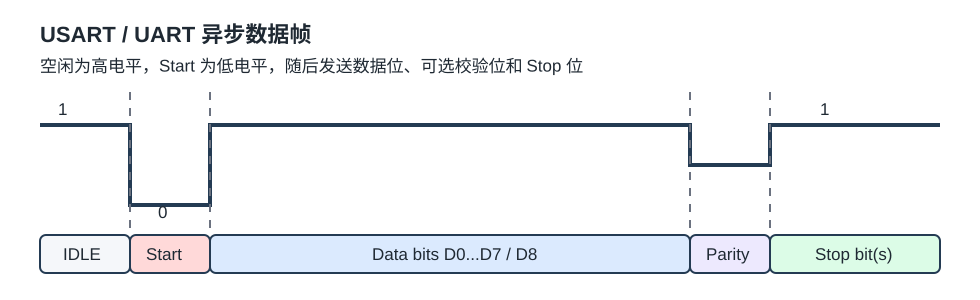

USART¶
USART 是 Universal Synchronous/Asynchronous Receiver/Transmitter 的缩写，中文常叫通用同步/异步收发器。STM32 的 USART 外设可以把软件写入数据寄存器的一个字节自动生成数据帧，从 TX 引脚发送出去；也可以自动接收 RX 引脚上的数据帧，拼接成字节后放入接收数据寄存器。
日常项目中最常用的是异步串口，也就是 UART 用法。
1. 协议定位¶
| 协议 | 引脚 | 双工 | 时钟 | 电平 | 设备关系 |
|---|---|---|---|---|---|
| USART/UART | TX、RX |
全双工 | 异步为主 | 单端 | 点对点 |
| I2C | SCL、SDA |
半双工 | 同步 | 单端开漏 | 多设备 |
| SPI | SCK、MOSI、MISO、SS |
全双工 | 同步 | 单端 | 多设备 |
| CAN | CAN_H、CAN_L |
半双工 | 异步 | 差分 | 多设备 |
USART 的特点：
- 引脚少，基础连接只需要
TX、RX和GND。 - 全双工，发送和接收可以同时进行。
- 异步模式不需要时钟线，但双方必须约定相同波特率。
- 外设自动处理起始位、数据位、校验位和停止位。
- 适合串口日志、上位机通信、模块通信和简单点对点控制。
USART 的局限：
- 没有协议级地址、仲裁和 ACK。
- TTL 串口不适合长距离和强干扰环境。
- 电平标准容易混淆，TTL、RS-232、RS-485 不能直接等同。
2. USART、UART 和串口¶
- UART 只强调异步收发。
- USART 同时支持同步和异步。
- 串口是工程口语，可能指 TTL UART、RS-232 或 RS-485。
STM32 外设名通常叫 USART。只要配置为异步模式，不使用外部时钟线，它的使用方式就和 UART 一样。
3. 硬件连接¶
最小连接方式：
MCU_A TX -> MCU_B RX
MCU_A RX <- MCU_B TX
MCU_A GND -- MCU_B GND
注意：
TX接对方RX，RX接对方TX。- 双方必须共地。
- 使用硬件流控时会增加
RTS/CTS。 - 使用同步 USART 时会增加时钟线，例如
CK或XCK。 - 连接 RS-232 或 RS-485 设备时必须加对应收发器。
4. 电平标准¶
USART/UART 描述的是帧格式，不规定物理电平。
| 类型 | 典型电平 | 特点 | 场景 |
|---|---|---|---|
| TTL/CMOS UART | 0/3.3 V 或 0/5 V | 单端、短距离 | MCU、USB-TTL、传感器模块 |
| RS-232 | 正负电压，逻辑常反相 | 需要电平转换芯片 | 老式 PC 串口、仪器 |
| RS-485 | 差分信号 | 长距离、多节点 | 工业现场、Modbus RTU |
串口不通时，要同时检查协议参数和电平标准。参数对了但电平错了，也会乱码或完全无响应。
5. 异步数据帧¶

一帧数据的顺序：
- 空闲状态为高电平。
- 起始位
Start bit为低电平，表示一帧开始。 - 数据位按配置发送，常见为 8 位，也可配置 9 位。
- 可选校验位，可以无校验、奇校验或偶校验。
- 停止位为高电平，长度可为 0.5、1、1.5 或 2 位。
常见写法 115200 8N1 表示：
- 波特率 115200。
- 8 个数据位。
- 无校验。
- 1 个停止位。
6. 波特率¶
波特率表示每秒传输多少个符号。普通 UART 中可近似看作每秒 bit 数。
| 波特率 | 常见用途 |
|---|---|
| 9600 | 低速模块、老设备 |
| 115200 | 串口调试、日志输出、下载器 |
| 921600 | 高速日志或短线传输 |
| 1 Mbps 以上 | 板级短线高速通信 |
课件中提到 STM32F103 USART 自带波特率发生器，最高可达 4.5 Mbits/s。实际能否稳定使用还取决于时钟源、误差、线长、电平转换芯片和对端能力。
7. STM32 USART 基本结构¶
课件中的 USART 基本结构可以概括为：
CPU 写入 -> 发送数据寄存器 TDR -> 发送移位寄存器 -> TX 引脚
RX 引脚 -> 接收移位寄存器 -> 接收数据寄存器 RDR -> CPU 读取
PCLK -> 波特率发生器 -> 发送/接收控制器
关键模块：
- 发送控制器：按帧格式把数据移出。
- 接收控制器：检测起始位，按波特率采样。
- 数据寄存器：软件读写入口。
- 移位寄存器：真正逐 bit 输出或输入。
- 波特率发生器：由外设时钟分频得到采样节拍。
- GPIO 复用：把外设信号映射到
TX/RX引脚。
课件列出的 STM32F103C8T6 USART 资源：
USART1USART2USART3
8. 常见配置项¶
| 配置项 | 典型值 | 说明 |
|---|---|---|
| 波特率 | 9600、115200 | 双方必须一致或误差足够小 |
| 数据位 | 8/9 | 常用 8 位 |
| 停止位 | 0.5/1/1.5/2 | 常用 1 位 |
| 校验 | 无、奇、偶 | 双方必须一致 |
| 模式 | 发送、接收、收发 | 常用收发同时开启 |
| 硬件流控 | none、RTS、CTS、RTS/CTS | 防止接收端来不及处理 |
| 中断/DMA | 可选 | 高频收发建议使用 |
9. 发送流程¶
轮询发送通常这样做：
- 等待发送数据寄存器空。
- 写入一个字节。
- 外设把字节送入发送移位寄存器。
- 外设自动补起始位、校验位和停止位。
- 等待发送完成，或继续写入下一个字节。
常见标志：
TXE：发送数据寄存器空，可以写入下一个字节。TC：Transmission Complete，最后一帧已经真正发完。
RS-485 半双工方向控制时要特别注意 TC。如果只等 TXE 就关闭发送使能，最后的停止位可能还没发完。
10. 接收流程¶
接收流程：
- 外设检测
RX从高变低，识别起始位。 - 按波特率在数据位中间采样。
- 采满数据位、校验位和停止位。
- 将结果放入接收数据寄存器。
- 置位接收标志，软件读取。
常见错误：
| 错误 | 含义 | 常见原因 |
|---|---|---|
ORE |
溢出错误 | 上一个字节没读，新字节已到 |
FE |
帧错误 | 停止位不对，波特率或电平异常 |
PE |
校验错误 | 校验配置不一致或数据受干扰 |
11. 扩展功能¶
课件列出的 USART 扩展能力：
- 同步模式。
- 硬件流控制。
- DMA。
- 智能卡。
- IrDA。
- LIN。
常见项目中最常用的是普通异步收发、中断接收、DMA 循环接收和 RS-485 方向控制。
12. 调试 checklist¶
TX/RX是否交叉连接。- 双方是否共地。
- TTL、RS-232、RS-485 电平是否匹配。
- 波特率、数据位、校验位、停止位是否一致。
- GPIO 复用模式是否正确。
- USART 和 GPIO 时钟是否打开。
- 是否区分
TXE与TC。 - 是否出现
ORE/FE/PE。 - RS-485 是否在完整帧结束后再切回接收。
- DMA 接收是否处理了空闲中断、半满和满缓冲边界。
参考资料¶
STM32入门教程.pptx：USART 简介、框图、基本结构相关页。- Microchip Developer Help: SAM L10/L11 SERCOM USART
- Microchip TB3208: Basic Operation of UART with Protocol Support